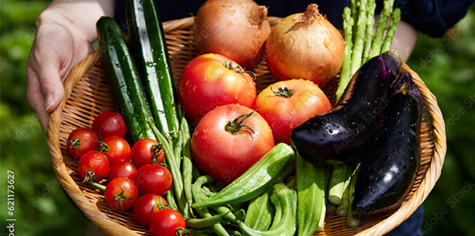

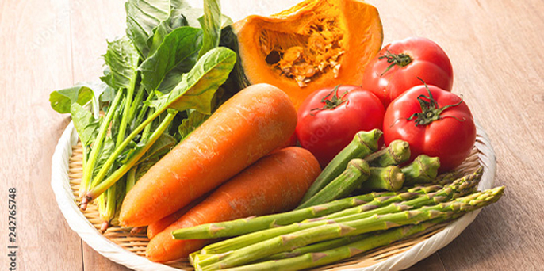
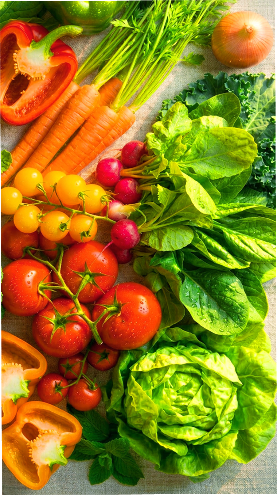
From Farm to Home,Naturally

From Farm to Home,Naturally

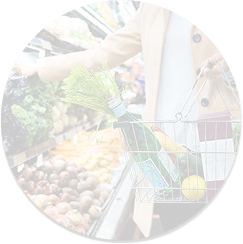
忙しくて
買い物に行けない

栄養バランスまで
手が回らない
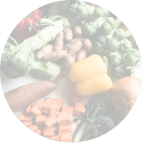
本当に安全な野菜か
不安

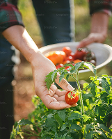
「スグ食べ」は、厳選したオーガニック 農家さんの穫れたて野菜を販売しています。
食材から選べるのはもちろん、 生産者からも選べます。 生産方法や生産地、それぞれ異なるこだわりで、 お気に入りの農家さんを見つけてください。
最短で24時間以内に届く新鮮な オーガニック野菜宅配サービスです。

「なるべく収穫したばかりの状態で、 野菜を味わって欲しい。」
スグ食べでは、既存の産地直送サービス のように
箱詰め用の倉庫を介すことは ありません。
農家が収穫したその日に、 お客様の元へ直送で野菜をお送りします。
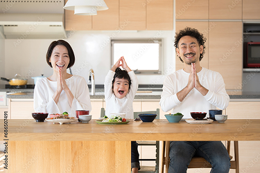
出品している生産者は、有機栽培もしくは
自然栽培の農家のみ。
全ての商品が無農
薬・無化学肥料など、
安全にこだわって生
産された
「オーガニック農作物」です。
そのため、どの商品も安心してお買い求め いただけます。

年間数十種の野菜を作る生産者から、 今が旬の多様な野菜が届きます。 スグ食べでは生産者ごとに商品が異なります。 中には年間100種類もの多品種生産をしている 生産者も。旬な野菜はもちろん、 珍しい野菜とも出会えます。


スグ食べの

実物を見ずに
商品を購入するのは不安...
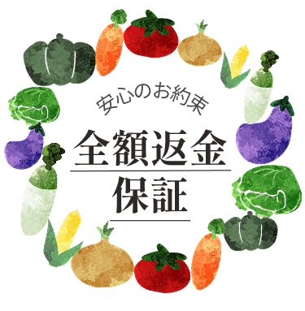
スグ食べに出品している農家さんたちは、
「大切に育てた自慢の農作物を、できるだけ
美味しい状態で食べてもらいたい。」そんな想いを持った農家さんばかりです。
そのため、収穫から梱包・出荷にいたるまでしっかりと 品質管理されています。
とはいえ、実物を見ずに野菜や果物を 購入するのはちょっと不安… そんな方にも安心して ご購入いただけるよう、スグ食べでは 品質保証をお約束しています。
万が一届いた商品に不備があった際には、 スグ食べにて全額返金対応いたします。
こんな農家さんが登録しています
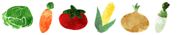
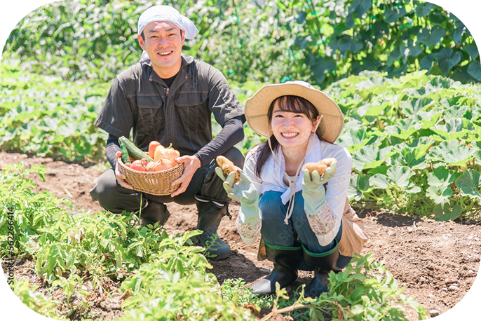
ひだまり農場（岡山県）
山田洋一さん
「ひだまり農場」では栽培期間中に 農薬・化学肥料を一切使用せず、 年間約100種類の野菜と米、卵を 生産しています。 堆肥・肥料もすべて手作りし、 有機質のものを使用しています。
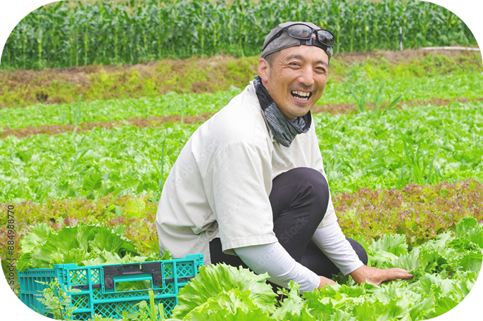
爽緑農園（愛媛県）
太田紘一さん
「爽緑農園」では農薬や除草剤は 一切使用せず、一つ一つのお野菜を丁寧に栽培しています。 お日様の光をたくさん浴びて育った お野菜は、葉や皮まで余すことなく 食べることができます。
こんな農家さんが登録しています
ひだまり農場（岡山県)山田洋一さん
「ひだまり農場」では栽培期間中に 農薬・化学肥料を一切使用せず、 年間約100種類の野菜と米、卵を 生産しています。 堆肥・肥料もすべて手作りし、 有機質のものを使用しています。
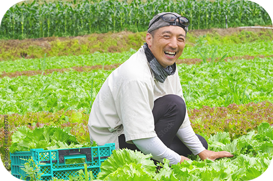
爽緑農園（愛媛県）太田紘一さん
「爽緑農園」では農薬や除草剤は 一切使用せず、一つ一つのお野菜を丁寧に栽培しています。 お日様の光をたくさん浴びて育った お野菜は、葉や皮まで余すことなく 食べることができます。
よくある質問
鮮度が抜群に違います。 通常の産直サービスは、
一度倉庫などに野菜を集め、そこで箱詰め作業をして
配送しています。
この仕組みでは、お客様が商品を
受け取る時には収穫してから3,4日が 経過しています。
スグ食べでは、箱詰め作業を 農家さんにお願いすることにより,
最短で収穫当日に商品を受け取ることができます。